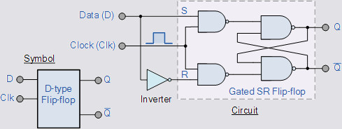

Digital Logic


|
The binary number system is not only the foundation of Computer Science, but also of digital electronics in general.
The number system we are first taught in school is the decimal number system, which are sets of ten, 0 to 9.
To add a value after 9, we move into the next column and start using two symbols like 10.
Binary does the same thing, but only has two values, 1 and 0 so when it wants to represent a third value, it moves into the next column by using two symbols like 10.
We can use two states to represent a language, like the dot-dash of the telegraph.
A digital signal has high voltage and low voltages over time, each of which can be mapped onto a binary digit.
By using just two states in a bit, then chaining the bits together, we can represent all of the characters in the english language and all of the numbers in the decimal number system, using just 8 bits.
|
The ASCII table above was the most successful type of encoding for the latin character and arabic numeral sets (text), until much later when Unicode extended ASCII to include all the character sets of the worlds major languages.
Colors and images are sent to your video card, translated using a Color Lookup Table into chroma and luminance values, then sent to your monitor.
Sounds are converted into a stream of analog signals, representing the changes over time in air pressure, using the table in a digital-to-analog converter (DAC) in your sound card, and sent to your speakers. Audio signals picked up by a microphone does the same process in reverse, using the vibrations in the microphone to get translated into 1s and 0s.
An advantage of digital circuits when compared to analog circuits is that signals represented digitally can be transmitted without degradation caused by noise. For example, a continuous audio signal transmitted as a sequence of 1s and 0s, can be reconstructed without error, provided the noise picked up in transmission is not enough to prevent identification of the 1s and 0s.
Transistors can open or close a circuit, turning power on an off like a light switch does. Instead of using your finger to flick a switch, transistors use a second power line to open or close the circuit. This second power line connects to a semiconductor material that is sandwiched between the ends of the first circuit.
When the semiconductor gets no power, it insulates or stops the current in the first circuit. As soon as it gets power from the second circuit, it conducts or starts the first circuit again.

Because of how the semiconductor can open or close a circuit, it is referred to as a gate.

Combinding these gates in particular patterns, we can represent the various states of logic from a boolean algebra table. These boolean value gates are called Logic Gates.
Logic gates that can be used to create combinational logic. Each logic gate is designed to perform a function of boolean logic when acting on logic signals.
Applying combinational logic in specific ways we can make a half adder. By connecting half adders together with a carry over line, we make what is known as a full adder. Full adders are used to add binary digits (bits) together.
Other circuits that use combinational logic are multiplexers, demultiplexers, encoders, decodersm and subtractors.
Two's Compliment (binary subtraction)
The two's complement of a binary number takes half the bits and treats them like negative values. Using this method, we can use a Full Adder circuit on negative numbers giving us subtraction. Addition in sets = multiplication and subtraction in sets = division, a full set of arithmatic.
Eight-bit two's-complement integers
| Bits |
Unsigned
value |
Two's
complement
value |
| 0111 1111 |
127 |
127 |
| 0111 1110 |
126 |
126 |
| 0000 0010 |
2 |
2 |
| 0000 0001 |
1 |
1 |
| 0000 0000 |
0 |
0 |
| 1111 1111 |
255 |
-1 |
| 1111 1110 |
254 |
-2 |
| 1000 0010 |
130 |
-126 |
| 1000 0001 |
129 |
-127 |
| 1000 0000 |
128 |
-128 |
Components
|
|
Electronic components come in many different packages.
The two main categories are through-hole (or leaded), and surface-mount, also known as surface-mount device (SMD).
Because they are smaller and have shorter interconnections, SMDs have better high-frequency characteristics but lower power rating.
|
IC
Integrated Circuit (IC) also known as a "chip", is a microscopic electronic circuit array formed by the fabrication of various electrical and electronic components (resistors, capacitors, transistors, and so on) on a semiconductor material (silicon) wafer, which can perform operations similar to the large electronic printed circuit boards (PCBs) made of discrete electronic components.

|
An integrated circuit (IC) is a set of electronic circuits on one small flat piece ("chip") of semiconductor material like silicon.
Integrating many transistors into a small chip also makes them cheaper and faster than discrete components.
As the technology progressed, millions, then billions of transistors could be placed on one chip, giving rise to the field of electronic design automation (EDA).
SSI small-scale integration 1964, 1 to 10 Transistors, 1 to 12 Logic Gates
MSI medium-scale integration 1968, 10 to 500 Transistors, 13 to 99 Logic Gates
LSI large-scale integration 1971, 500 to 20 000 Transistors, 100 to 9999 Logic Gates
VLSI very large-scale integration 1980, 20 000 to 1 000 000 Transistors, 10 000 to 99 999 Logic Gates
ULSI ultra-large-scale integration 1984, 1 000 000 Transistors and more, 100 000 and more Logic Gates
|
The IC's mass production capability, reliability and building-block approach to circuit design has ensured the rapid adoption of standardized ICs in place of designs using discrete transistors. ICs are now used in virtually all electronic equipment and have revolutionized the world of electronics. Computers, mobile phones, and other digital home appliances are now inextricable parts of the structure of modern societies, made possible by the small size and low cost of ICs.
Integrated circuits can be classified into analog, digital, and mixed signal, consisting of both analog and digital signaling on the same IC.
Digital integrated circuits can contain anywhere from one to billions of logic gates, flip-flops, multiplexers, and other circuits in a few square millimeters.
The small size of these circuits allows high speed, low power dissipation, and reduced manufacturing cost compared with board-level integration.
To choose representations, engineers consider types of digital systems. Most digital systems divide into "combinational systems" and "sequential systems." A combinational system always presents the same output when given the same inputs. It is basically a representation of a set of logic functions, as already discussed.
A sequential system is a combinational system with some of the outputs fed back as inputs. This makes the digital machine perform a "sequence" of operations. The simplest sequential system is probably a flip flop, a mechanism that represents a binary digit or "bit".
Flip-Flop

A flip-flop or latch is a circuit that has two stable states and can be used to store state information. The circuit can be made to change state by signals applied to one or more control inputs and will have one or two outputs. It is the basic storage element in sequential logic. Flip-flops and latches are fundamental building blocks of digital electronics systems used in computers, communications, and many other types of systems.
Sequential systems are often designed as state machines. In this way, engineers can design a system's gross behavior, and even test it in a simulation, without considering all the details of the logic functions.
Sequential systems divide into two further subcategories. "Synchronous" sequential systems change state all at once, when a "clock" signal changes state. "Asynchronous" sequential systems propagate changes whenever inputs change.
Synchronous sequential systems are made of well-characterized asynchronous circuits such as flip-flops, that change only when the clock changes, and which have carefully designed timing margins.
Timer ICs
Timers are special purpose integrated circuits used for the purpose of counting and to keep a track of time in intended applications.
The switching of the output waveform is achieved by controlling the trigger and reset inputs of the 555 timer which are held “HIGH” by the two pull-up resistors, R1 and R2. By taking the trigger input (pin 2) “LOW”, switch in set position, changes the output state into the “HIGH” state and by taking the reset input (pin 4) “LOW”, switch in reset position, changes the output into the “LOW” state.
This 555 timer circuit will remain in either state indefinitely and is therefore bistable. Then the Bistable 555 timer is stable in both states, “HIGH” and “LOW”. The threshold input (pin 6) is connected to ground to ensure that it cannot reset the bistable circuit as it would in a normal timing application.
Shift Register
This sequential device loads the data present on its inputs and then moves or “shifts” it to its output once every clock cycle, hence the name Shift Register.
A shift register basically consists of several single bit “D-Type Data Latches”, one for each data bit, either a logic “0” or a “1”, connected together in a serial type daisy-chain arrangement so that the output from one data latch becomes the input of the next latch and so on.
Data bits may be fed in or out of a shift register serially, that is one after the other from either the left or the right direction, or all together at the same time in a parallel configuration.
The number of individual data latches required to make up a single Shift Register device is usually determined by the number of bits to be stored with the most common being 8-bits (one byte) wide constructed from eight individual data latches.
Shift Registers are used for data storage or for the movement of data and are therefore commonly used inside calculators or computers to store data such as two binary numbers before they are added together, or to convert the data from either a serial to parallel or parallel to serial format. The individual data latches that make up a single shift register are all driven by a common clock ( Clk ) signal making them synchronous devices.
Shift register IC’s are generally provided with a clear or reset connection so that they can be “SET” or “RESET” as required. Generally, shift registers operate in one of four different modes with the basic movement of data through a shift register being:
Serial-in to Parallel-out (SIPO) - the register is loaded with serial data, one bit at a time, with the stored data being available at the output in parallel form.
Serial-in to Serial-out (SISO) - the data is shifted serially “IN” and “OUT” of the register, one bit at a time in either a left or right direction under clock control.
Parallel-in to Serial-out (PISO) - the parallel data is loaded into the register simultaneously and is shifted out of the register serially one bit at a time under clock control.
Parallel-in to Parallel-out (PIPO) - the parallel data is loaded simultaneously into the register, and transferred together to their respective outputs by the same clock pulse.
Analog ICs
Not all ICs are digital. ICs that operate over a continuous range of signal are called as Analog ICs. These are subdivided as linear Integrated Circuits (Linear ICs) and Radio Frequency Integrated Circuits (RF ICs). A frequently used analog IC is an operational amplifier or simply called as an op-amp.
Mixed ICs
The integrated circuits that are obtained by the combination of analog and digital ICs on a single chip are called as Mixed ICs. These ICs functions as Digital to Analog converters, Analog to Digital converters (D/A and A/D converters).
Comparators
The comparator ICs are used as comparators for comparing the inputs and then to produce an output based on the ICs’ comparison.
Switching ICs
Switches or Switching ICs are designed by using the transistors and are used for performing the switching operations.
Audio amplifiers
The audio amplifiers are one of the many types of ICs, which are used for the amplification of the audio. These are generally used in the audio speakers, television circuits, and so on.
Operational amplifiers
The operational amplifiers are frequently used ICs, similar to the audio amplifiers which are used for the audio amplification. These op-amps are used for the amplification purpose, and these ICs work similar to the transistor amplifier circuits.
Next Page: Processors